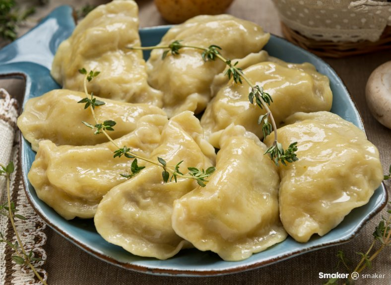

Pierogi

Pierogi are filled dumplings made by wrapping unleavened dough around a savoury or sweet filling and cooking in boiling water. They are often pan-fried before serving. Pierogi or their varieties are associated with the cuisines of Central, Eastern and Southeastern Europe.
Pierogi are delightful dumplings stuffed with potatoes and cheese. These are traditional Polish dumpling that puts a whole new meaning to comfort food!
ingridients
- 4 Cups all-purpose flour
- 2 teaspoon Salt
- 2 large eggs
- cup vegetable oil
- cup warm water
- 2 Tablespoons butter unsalted
Procedure
- In the bowl of a stand mixer, add the flour, salt, vegetable oil, egg and warm water. Use the dough hook on low to mix until combined. Bring the speed up to medium-high and mix for 5-6 minutes, until the dough is smooth and springy. Transfer to an oiled bowl and let rest for 30 minutes.
- Peel and chop potatoes into large pieces and add to a pot. Add enough water to cover the potatoes by an inch and bring to a boil over high heat. Boil for about 20-25 minutes until the potatoes are fork tender. Drain and allow to cool for 5-10 minutes and then mash well.
- Using a 3 inch cookie cutter cut circles in the dough as close as possible to maximize the amount of usable dough. Add about ½ tablespoon of the potato mixture to the center of the rounds and then fold over. Pinch the edges together tightly to seal the filling in. Make sure to really pinch the dough together because you don’t the filling to burst out.
Home
chicken masala
rice masala